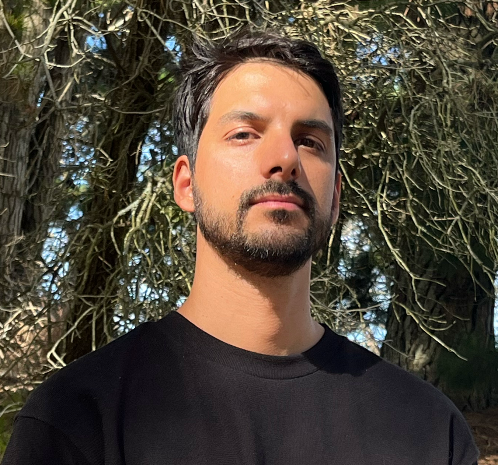

Leandro Bruno
Soy un editor enfocado en narrativa cinematográfica, series documentales y publicidad de alto impacto. Mi trabajo se centra en encontrar el ritmo y la emoción precisa para cada historia, colaborando con directores y productoras líderes de la industria como Netflix, Prime Video y Disney+.
A lo largo de mi carrera, he tenido el privilegio de editar proyectos destacados como "Menem", "El Tiempo de las Moscas" y "Coppola", buscando siempre una estética visual moderna y una estructura narrativa sólida que conecte con la audiencia.